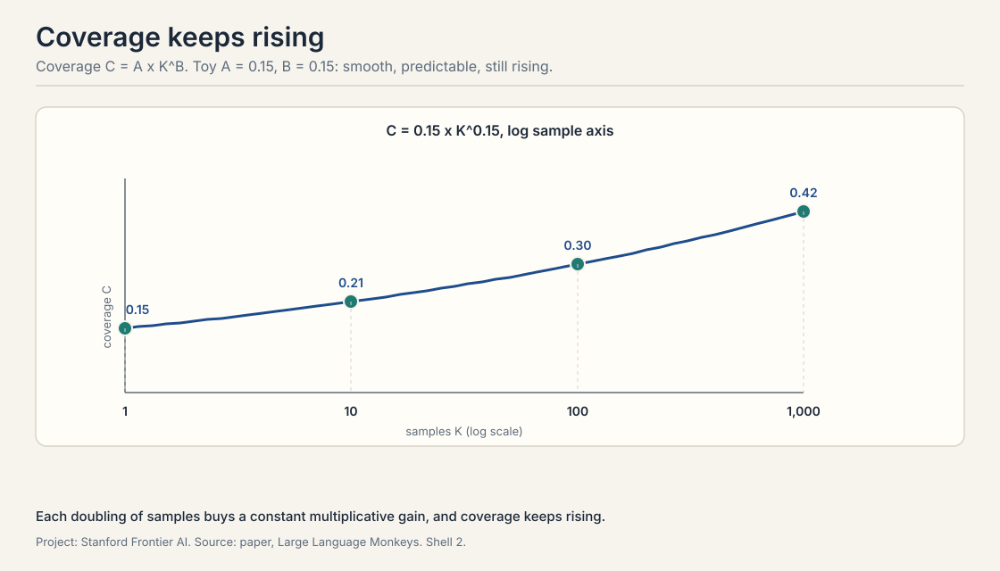
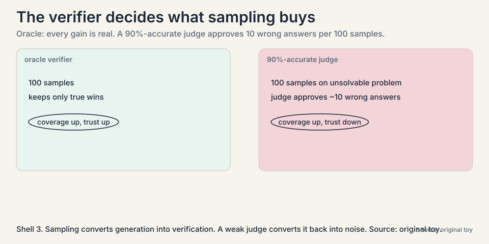
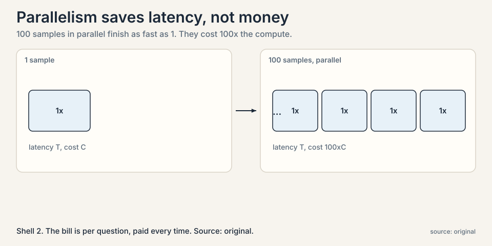
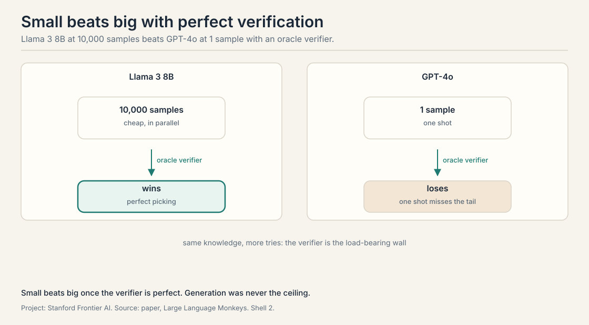
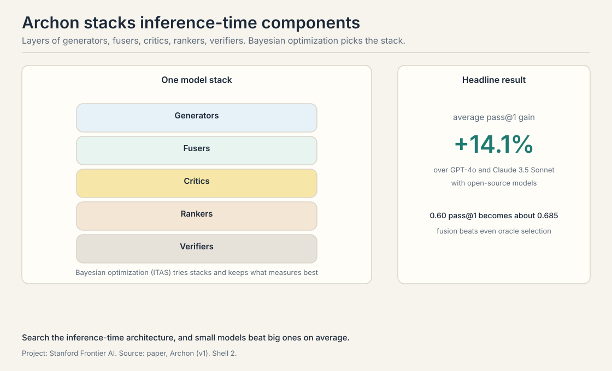

Lecture 2: Test-Time Scaling: Ask Again and Again
Video blocked (ad-blocker or local file mode).
Watch on YouTubeVideo not loading? Watch on YouTube
Azalia Mirhoseini on repeated sampling and coverage, the generation-verification gap, parallel vs sequential compute, and Archon inference-time architectures.
The problem: the answer is in there, but one try misses it
Lecture 1 ended with a claim: a small model can solve problems far above its apparent level if you ask it enough times. This chapter turns that claim into a method and does the arithmetic.
Start with a concrete number. Suppose a model solves a given hard problem with probability 5 percent per attempt. One try: 5 percent. That is a failing grade. But the failures are not the whole story. Each attempt is an independent draw. Some draws land.
A verifier decides which draws land. For math, the verifier checks the answer against the known solution. For code, it runs unit tests. The strongest possible verifier is the oracle verifier: it always knows the right answer, so it never keeps a wrong one. With an oracle, the only question is whether at least one attempt was right. That fraction, problems solved by at least one of k samples, is called coverage.
First attempt, worked by hand: the math of asking again
Take the 5-percent model. Ask it 10 times. The chance that all 10 fail is 0.95 multiplied by itself 10 times:
p(one try works) = 0.05 p(all 10 fail) = 0.95^10 = 0.60 coverage at 10 tries = 1 - 0.60 = 0.40
Ten tries lift 5 percent to 40 percent. Ask 100 times:
p(all 100 fail) = 0.95^100 = 0.006 coverage at 100 tries = 1 - 0.006 = 0.994
A model that looks useless at one try solves the problem 99.4 percent of the time at 100 tries, provided something can spot the right answer. That is the entire trick of repeated sampling. The lecture’s phrase for it: the models already know the answers to hard problems. Sampling surfaces them.

Subchapter: why the curve is log-linear
Each extra sample multiplies the failure chance by another 0.95, so coverage climbs fast at first and then flattens: 10 tries give 40 percent, 100 give 99.4, 1000 give essentially 100. Plotted against the log of the sample count, this curve is close to a straight line. The paper calls it log-linear scaling: coverage rises linearly with each tenfold increase in samples. That predictable line is what makes the method engineering rather than luck.
The line has a slope, and the slope has a meaning. Steeper means each tenfold buys more coverage. Bigger models have steeper slopes: their per-try p is higher, so the same k reaches further. The lecture’s reading: sampling and scale are complements. Scale raises p. Sampling multiplies the draws.
Subchapter: the independence assumption, honestly
The arithmetic assumes independent draws. Real samples are not fully independent: the model’s favorite patterns repeat, so the effective number of distinct tries is smaller than k. The coverage formula is an upper bound, and the gap between the bound and reality is the diversity problem. Lecture 6 is about closing it. For now, read every coverage number as “if the samples were truly independent”, and remember they are not.
Where it breaks, part 1: the verifier is doing the real work
The arithmetic above assumed an oracle verifier. Real verifiers are weaker, and the method is only as good as the check. The lecture is blunt about this: with verifiers, the problem is easy. Without them, you need a whole research area, training models to judge answers, which the course covers later.

Subchapter: the verifier’s error budget, worked
Watch the failure concretely. Suppose the verifier is a learned judge that is right 90 percent of the time. At 100 samples on a problem the model truly cannot solve, the judge still approves about 10 wrong answers by mistake. Sampling more now hurts: more draws mean more chances for the judge to err. The coverage curve keeps climbing, but the answers it certifies get less trustworthy. The method converts a generation problem into a verification problem. If verification is unsolved, nothing is solved.
The lecture adds a measured version of this decay. Trained verifiers lose precision as the sample count grows: past roughly 400 samples, the judge’s precision drops, because more draws mean more adversarial-looking wrong answers for it to sift. The operating point the lecture reports as shipped is around 100 samples: enough for the log-linear gains, before the judge drowns. [uncertain: the 400-sample decay figure is from the lecture’s Part 3 summary. the lecture does not name the verifier architecture.]
Subchapter: the generation-verification gap
Here is the sharper form of the same problem. Coverage keeps rising with k, but our ability to pick the winner does not. With majority vote as the selector, accuracy plateaus at 10 to 50 samples: more samples add votes, but the votes keep saying the same wrong thing. The generation-verification gap is the distance between what sampling can find and what selection can pick. It grows with k. Closing it needs better selectors, not more samples. That is the subject of Lectures 6 and 7.
Where it breaks, part 2: the bill
One hundred tries cost one hundred times one try. The samples run in parallel, so wall-clock latency need not grow, but the compute bill grows linearly with k.

Subchapter: the cost frontier per problem
The lecture frames this as a frontier: for each problem there is a tradeoff between the compute you spend and the accuracy you get, and the right point on the frontier depends on the problem’s difficulty. Easy problems should get few samples. Hard ones earn many. Spending 10,000 samples on a question a single try would answer is pure waste.
The lecture walks through the Snell et al. result on how to split the budget: parallel sampling versus sequential revision, allocated by difficulty. On easy and medium problems, parallel sampling wins: independent tries find the answer. On hard problems, sequential revision wins: each attempt builds on the last, and blind parallelism wastes draws. Test-time compute beats more pretraining on easy and medium problems, and loses on hard ones. The decision rule: match the strategy to the difficulty, and spend where the verifier says it pays.
The key question
If small models already contain the answers, can repeated sampling plus verification make a small model beat a big one?
What the papers found
The Large Language Monkeys paper answers yes, with numbers. A Llama 3 8B model, far weaker than GPT-4o at one attempt, sampled thousands of times with verification, outperforms the larger proprietary models on hard math and coding benchmarks. On agentic coding tasks in the style of SWE-bench, DeepSeek v3 with 1,000 samples beats Claude 3.5 Sonnet and o1-preview. The small model does not get smarter. It gets more chances, and the verifier does the selecting.

OpenAI’s o1 showed the same scaling from the other side: with no change to the weights, accuracy on the hard AIME math benchmark rises log-linearly with test-time compute. Same curve, same message. Inference-time effort is a real axis of capability, independent of model size.
Subchapter: Archon, the pipeline
The lecture then pushes one step further: Archon, an inference-time architecture. Instead of sampling one model many times and voting, Archon composes generators, critics, and fusers into a small system that is itself tuned, per task, by search over its configuration.

The pipeline, in order: ten generator models each sample once, for diversity. A critic model lists strengths and weaknesses of each candidate. A ranker orders them. Fuser models then write the final answer, synthesizing across candidates rather than picking one. The lecture’s headline result: fusion beats oracle selection. Even picking the best candidate perfectly does worse than fusing several good ones.
Then the meta move: the architecture itself is searched. Under a fixed call budget, Bayesian search over configurations finds the per-task best: the critic-to-ranker-to-fuser ordering, how many fusers to stack, where the funnel narrows. The reported result: using only open-source models, Archon matches or beats the frontier closed-source models of its day at pass@1, with an average improvement of 14.1 percent over GPT-4o and Claude 3.5 Sonnet across instruction following, reasoning, math, and coding. The point is architectural: how you spend inference compute matters as much as how much you spend.
Mapping back: what each property fixes
| One-shot failure | Test-time scaling answer | How |
|---|---|---|
| One try misses tail knowledge | Sample k times | Coverage is 1-(1-p)^k: 5% per try becomes 99.4% at 100 tries. |
| No way to pick the winner | Verify each sample | An oracle or test-based verifier selects without human labor. |
| Fixed effort per question | Spend compute where it pays | Parallel sampling plus per-problem budgets put tries on hard problems. |
| One model, one strategy | Compose inference architectures | Archon-style systems tune generators, critics, and fusers per task: +14.1% average pass@1. |
The honest price: compute per question, forever
Test-time scaling never changes the model. Every question pays the sampling bill again. A thousand samples per hard problem is fine for a benchmark and ruinous for a product. Worse, the method needs the verifier at answer time: for open-ended questions with no checkable answer, the coverage trick does not apply.
That is why the loop of Lecture 1 matters. Test-time scaling finds the answers. Training on them, the subject of Lecture 6, moves the answers into the first try so you stop paying per question. Test-time scaling is the discovery engine. It is not the final product.
Go deeper
- Noam Brown on large-scale test-time compute (No Priors, 2026): capability as a function of budget, benchmark-maxxing, limits on recursive self-improvement. https://www.youtube.com/watch?v=AZrU6y3pUcU
- Brown et al., Large Language Monkeys (2024): repeated sampling, coverage, the log-linear law. https://arxiv.org/abs/2407.21787
- Zhao et al., Archon (2024): inference-time architectures, critic-ranker-fuser pipelines, architecture search under a call budget. https://arxiv.org/abs/2409.15254
- OpenAI o1 system card (2024): test-time scaling curves on AIME, cited in lecture. https://openai.com/index/openai-o1-system-card/
Coverage asks: did at least one of the k samples solve the problem, assuming a verifier can identify it. It measures the search power of sampling. Pass@k in its common use is the same idea with the verifier folded in: the fraction of problems where a correct answer appears among k tries. Both rise log-linearly with k in the papers. The lecture stresses coverage because it isolates what sampling alone can do. Because each sample multiplies the all-fail probability by (1-p). The failure probability decays exponentially in k, so success rises as 1 minus an exponential, which looks linear against log k over the practical range. The monkeys paper derives this theoretically. The lecture reports the empirical match.
A model solves a coding problem with p = 0.2 per try. At k = 5: all fail with 0.8^5 = 0.33, so coverage is 67%. At k = 20: 0.8^20 = 0.0115, coverage 98.9%. Notice the shape: the first 5 tries bought 47 points (20 to 67), the next 15 bought 32. Diminishing returns per sample, linear returns per tenfold. That is the whole planning intuition for sampling budgets. When samples are not independent. If the model repeats its favorite wrong pattern, the effective k is much smaller than the nominal k. The formula is an upper bound. Diversity, Lecture 6’s subject, is what closes the gap between the bound and the measured curve.
Three reasons. First, the verifier: without a reliable check, more samples add noise, not signal. Second, cost: k samples cost k times the compute on every question, while a bigger model pays once at training time. Third, the base rate p matters: a stronger model has higher per-try success, so it needs fewer samples to reach the same coverage. Sampling and scale are complements, not substitutes. It depends on the problem. The lecture frames a cost-accuracy frontier: easy problems deserve few samples, hard ones many. Adaptive budgets, spending compute where the verifier says it pays, are the practical form of the idea.
Architecture. Instead of one generator sampled k times, Archon builds a small system: multiple generators for diversity, critic models that judge candidates, and a fuser that produces the final answer, with the whole configuration tuned per task by search. With only open-source models it beat the frontier closed models of its day by 14.1 percent on average at pass@1. The lesson: inference compute is a design space, not just a dial. No. It is pure test-time scaling. That is both its strength, no training needed, and its price, the system cost is paid on every question.
Ten generator models each produce one answer: diversity by construction. The critic reads each candidate and lists strengths and weaknesses. The ranker orders the candidates by quality. Then fuser models read the ranked set and write a single final answer, synthesizing the best parts instead of picking one winner. The lecture’s key finding: fusion beats even oracle selection. Synthesizing several good candidates outperforms perfectly picking the best one. Search. Under a fixed inference-call budget, Bayesian optimization tries configurations: how many generators, critic before or after ranker, how many fuser layers, where the funnel narrows. The critic-to-ranker-to-fuser ordering and stacked fuser layers emerged from that search, not from first principles.
Coverage rises with k, but our ability to pick the winner does not keep up. With majority vote as the selector, accuracy plateaus around 10 to 50 samples: the votes keep coming, but they keep agreeing on the same wrong answer. The gap between what sampling finds and what selection picks grows with k. Better selectors, learned reward models, debate, are the only way to close it. Because the model’s errors are correlated, not random. If 70% of samples share the same wrong reasoning pattern, more samples just add more votes for that pattern. Majority vote converges to the model’s favorite answer, right or wrong. It measures popularity, not correctness.
Not 10 blind samples. First, classify difficulty: a cheap model or a short probe estimates whether the question is easy, medium, or hard. Easy: 1-2 samples, spend the rest nowhere. Medium: parallel samples with majority vote. Hard: sequential revision, where each attempt sees the last, plus a critic pass on the finalists. Reserve 1-2 calls for verification, because an unverified answer from 10 samples is worth less than a verified answer from 5. The lecture’s frontier logic: match strategy to difficulty, never spend uniformly. Easy questions get the hard-question budget, pure waste, and hard questions get starved. The classifier is itself a model call with its own error rate. In practice teams set a floor: every question gets at least 2 samples plus a verification call, so misclassification degrades gracefully instead of catastrophically.
Recap: the whole lesson on one screen
- The answer is in there. A 5-percent-per-try model is not a 5-percent model. Independent tries accumulate.
- The arithmetic. Coverage at k tries is 1-(1-p)^k. At p=0.05: 10 tries give 40%, 100 give 99.4%.
- Log-linear. Coverage rises linearly with each tenfold increase in samples. Predictable, engineerable.
- Small beats big. Llama 3 8B with thousands of verified samples outperforms GPT-4o-class models at one try. DeepSeek v3 at 1,000 samples beats Claude 3.5 Sonnet and o1-preview on SWE-bench-style tasks.
- The verifier does the work. An oracle makes sampling pure gain. A 90-percent judge approves wrong answers, and more samples then add noise. Precision drops past ~400 samples.
- The bill. k samples cost k times the compute. Parallelism saves latency, not money. Spend samples on hard problems. Match parallel vs sequential to difficulty.
- Architecture matters. Archon composes generators, critics, rankers, and fusers, tuned per task by search: +14.1% average pass@1 over frontier closed models, with open models only. Fusion beats oracle selection.
- The price. The model never improves. Every question pays again. The generation-verification gap grows with k. Training on the winners, Lecture 6, is how you stop paying.
Official sources and further reading
Official: - CS329A Part 2: Test-Time Compute Scaling (Autumn 2025): the lecture this chapter follows. link - Brown et al., “Large Language Monkeys” (2024): repeated sampling, coverage, the log-linear law. paper - Zhao et al., “Archon” (2024): - inference-time architectures, the 14.1% figure.
Further reading: - OpenAI o1 system card (2024): test-time scaling curves on AIME, cited in lecture. https://openai.com/index/openai-o1-system-card/ - Snell et al., “Scaling LLM Test-Time Compute Optimally” (2024): parallel vs sequential allocation by difficulty, covered in lecture.
Caveats from these sources. All benchmark numbers are Autumn 2025 snapshots. Model names date quickly. The monkeys coverage figures assume oracle verification, which real deployments do not have. The 14.1% Archon gain is an average across four task families, not a uniform win. The 400-sample verifier-precision decay is lecture-reported without a named architecture. Snell et al. details are from the lecture’s walkthrough, not re-derived.
Connections to the other courses
- CS329Z: how to build the verifiers this chapter assumes: unit-test harnesses and evaluation pipelines for agents.
- CS329A L06: where the verified samples go: training data for the next turn of the loop.
- CS329A L07: what happens when the verifier itself is learned and fallible.
- CS229S: the systems cost of the sampling bill: what 1,000 parallel samples actually cost in FLOPs and memory.